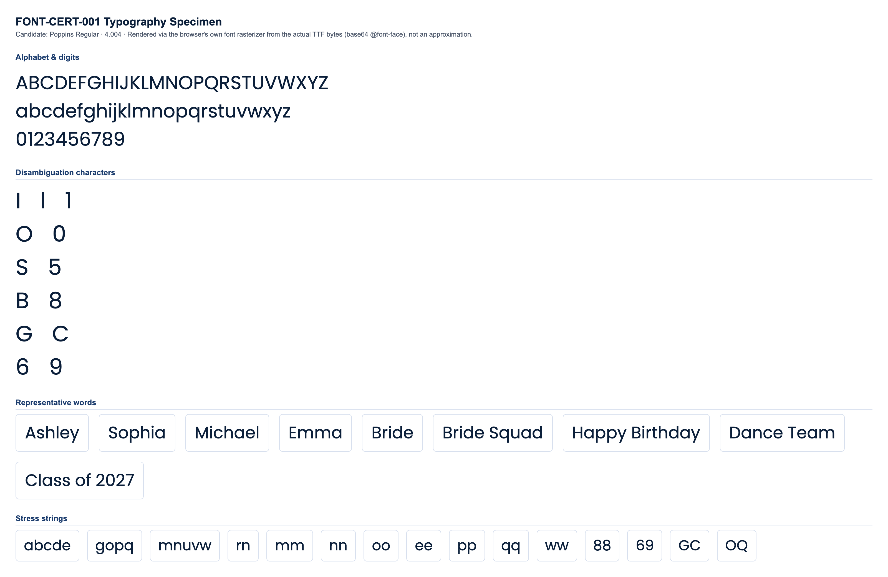

CONDITIONAL PASS
Classification and the feedback below are computed at the mid-range letter height for each stone size (the representative case). Full min/mid/max data is shown in section 4.
No blocking issues found.
Min and max height produce no more collisions or low-stone-count findings than mid height.
Medium
No blocking production failures, but 15 refinement note(s) were found (13 actionable item(s) below) -- readability, spacing, or anatomy concerns that would need addressing for production quality.
| Status | Check | Category | Detail |
|---|---|---|---|
| PASS | Successful TTF parsing | parsing | opentype.js parsed the file without error. |
| PASS | Outline format | structure | TrueType (quadratic) outlines. sfnt signature "0x00010000", opentype.js outlinesFormat="truetype". |
| PASS | Quadratic TrueType outlines | structure | TrueType file with quadratic curves confirmed: 78 curve commands found across 10 sampled glyphs. |
| PASS | unitsPerEm | structure | unitsPerEm = 1000 |
| PASS | Glyph count | structure | 1060 glyphs (font.numGlyphs=1060). |
| PASS | .notdef at glyph index 0 | structure | .notdef confirmed at glyph index 0. |
| PASS | Unicode cmap coverage | coverage | cmap maps 471 Unicode code point(s) to glyphs. |
| PASS | Required character coverage (A-Z, a-z, 0-9, space, . , ' - ! ?) | coverage | All 69 required characters map to a real glyph (glyph index != 0). |
| PASS | Required sfnt tables | structure | All required tables present: cmap, glyf, head, hhea, hmtx, loca, maxp, name, post, OS/2. |
| PASS | Family / subfamily / version / PostScript naming | naming | family="Poppins", subfamily="Regular", version="4.004", postScriptName="Poppins-Regular". |
| PASS | Ascender, descender, line gap, horizontal metrics | metrics | ascender=1050, descender=-350, hhea.lineGap=100, advanceWidthMax=2541, numberOfHMetrics=1059 (hmtx table present: true). |
| PASS | Invalid or empty glyphs | geometry | No mapped, non-whitespace, non-invisible-by-design character resolves to an empty outline. |
| PASS | Open contours | geometry | Every required-character contour closes explicitly (an explicit "Z"/closepath command) or implicitly (its final point returns to its starting point). |
| PASS | Self-intersections | geometry | Strict transversal-crossing test (deduplicated, 16-segments-per-curve flattened outline, 69 required characters) found no self- or cross-contour crossings. |
| WARNING | Zero-length or duplicate outline segments | geometry | 40 of 69 character(s) contain 290 raw zero-length draw command(s) total (a command whose endpoint exactly duplicates the current pen position -- draws nothing, harmless no-op, but real source-file redundancy), 0 duplicate outline segments. Not production-blocking: these commands have no visual or geometric effect. Per-character counts: "B" (zero-length:8, duplicate:0), "C" (zero-length:8, duplicate:0), "D" (zero-length:4, duplicate:0), "G" (zero-length:8, duplicate:0), "J" (zero-length:4, duplicate:0), "O" (zero-length:8, duplicate:0), "P" (zero-length:4, duplicate:0), "Q" (zero-length:9, duplicate:0), +32 more. |
| PASS | Coordinates outside valid TrueType ranges | geometry | All required-character outline coordinates fall within the signed 16-bit range (-32768 to 32767). |
| PASS | Inconsistent or suspicious advance widths / side bearings | metrics | Advance widths for required characters cluster reasonably around the median (608 units). |
Rendered from the actual source TTF via a base64-embedded @font-face rule (typography), and through the real production pipeline FontManager → OpenTypeProvider → GeometryEngine.generateTextLayout() → StoneLayout (rhinestone), at this milestone's own physical letter-height range per stone size:
| Stone size | Min | Mid (representative) | Max |
|---|---|---|---|
| SS6 | 35mm | 42.5mm | 50mm |
| SS10 | 45mm | 52.5mm | 60mm |
| SS16 | 65mm | 77.5mm | 90mm |
| SS20 | 80mm | 95mm | 110mm |
| SS30 | 106mm | 108.5mm | 111mm |


Successful layout generation (a non-empty StoneLayout with no collisions) is not the same as visual readability -- see each height variant's readability metrics below for objective, threshold-based findings.
| SS6 | text height: 35mm |
|---|---|
| SS10 | text height: 45mm |
| SS16 | text height: 65mm |
| SS20 | text height: 80mm |
| SS30 | text height: 106mm |
| Pair | Size | Stone counts | Chamfer distance | Result |
|---|---|---|---|---|
| "I" vs "l" | SS16 | 20 / 23 | 0.0212 | WARNING |
| "l" vs "1" | SS16 | 23 / 24 | 0.0535 | WARNING |
| "I" vs "1" | SS16 | 20 / 24 | 0.0570 | WARNING |
| "O" vs "0" | SS16 | 58 / 52 | 0.0544 | WARNING |
| "S" vs "5" | SS16 | 49 / 52 | 0.0447 | WARNING |
| "B" vs "8" | SS16 | 58 / 61 | 0.0353 | WARNING |
| "G" vs "C" | SS16 | 63 / 50 | 0.0537 | WARNING |
| "Q" vs "O" | SS16 | 63 / 58 | 0.0541 | WARNING |
| "e" vs "c" | SS16 | 48 / 37 | 0.0462 | WARNING |
| "e" vs "o" | SS16 | 48 / 44 | 0.0441 | WARNING |
| "c" vs "o" | SS16 | 37 / 44 | 0.0421 | WARNING |
| "6" vs "9" | SS16 | 58 / 57 | 0.0350 | WARNING |
Threshold: 0.09 (normalized, unit-height point clouds). Below threshold = flagged as visually similar.
| Char | SS6 | SS10 | SS16 | SS20 | SS30 |
|---|---|---|---|---|---|
| "A" | 45 | 42 | 45 | 47 | 46 |
| "B" | 60 | 55 | 58 | 60 | 60 |
| "C" | 50 | 48 | 50 | 53 | 52 |
| "D" | 55 | 54 | 55 | 61 | 59 |
| "E" | 42 | 39 | 40 | 43 | 42 |
| "F" | 36 | 32 | 34 | 36 | 35 |
| "G" | 65 | 62 | 63 | 67 | 65 |
| "H" | 48 | 45 | 48 | 49 | 50 |
| "I" | 22 | 20 | 20 | 22 | 22 |
| "J" | 31 | 29 | 30 | 32 | 32 |
| "K" | 49 | 44 | 47 | 47 | 47 |
| "L" | 28 | 27 | 27 | 30 | 29 |
| "M" | 70 | 66 | 66 | 70 | 72 |
| "N" | 58 | 54 | 57 | 59 | 60 |
| "O" | 59 | 56 | 58 | 62 | 61 |
| "P" | 43 | 40 | 40 | 44 | 44 |
| "Q" | 64 | 61 | 63 | 68 | 67 |
| "R" | 54 | 49 | 50 | 55 | 53 |
| "S" | 50 | 47 | 49 | 52 | 51 |
| "T" | 31 | 30 | 31 | 32 | 32 |
| "U" | 49 | 46 | 48 | 50 | 51 |
| "V" | 42 | 40 | 40 | 43 | 43 |
| "W" | 75 | 69 | 72 | 77 | 77 |
| "X" | 45 | 42 | 42 | 45 | 42 |
| "Y" | 34 | 33 | 33 | 36 | 35 |
| "Z" | 44 | 41 | 42 | 44 | 44 |
| "a" | 48 | 46 | 49 | 50 | 50 |
| "b" | 55 | 52 | 53 | 58 | 57 |
| "c" | 39 | 38 | 37 | 42 | 41 |
| "d" | 54 | 52 | 54 | 56 | 57 |
| "e" | 50 | 47 | 48 | 53 | 51 |
| "f" | 29 | 28 | 27 | 28 | 28 |
| "g" | 67 | 65 | 67 | 72 | 69 |
| "h" | 45 | 42 | 45 | 47 | 47 |
| "i" | 22 | 21 | 22 | 24 | 23 |
| "j" | 34 | 31 | 32 | 35 | 32 |
| "k" | 42 | 39 | 40 | 44 | 43 |
| "l" | 23 | 22 | 23 | 24 | 24 |
| "m" | 63 | 60 | 64 | 67 | 65 |
| "n" | 41 | 37 | 40 | 43 | 41 |
| "o" | 45 | 43 | 44 | 47 | 47 |
| "p" | 57 | 53 | 54 | 60 | 59 |
| "q" | 56 | 52 | 57 | 57 | 58 |
| "r" | 21 | 20 | 21 | 22 | 22 |
| "s" | 42 | 40 | 40 | 44 | 43 |
| "t" | 28 | 26 | 26 | 26 | 27 |
| "u" | 40 | 37 | 39 | 41 | 41 |
| "v" | 34 | 32 | 33 | 32 | 32 |
| "w" | 59 | 53 | 56 | 58 | 59 |
| "x" | 34 | 32 | 32 | 34 | 34 |
| "y" | 40 | 39 | 40 | 41 | 41 |
| "z" | 33 | 32 | 33 | 36 | 33 |
| "0" | 53 | 50 | 52 | 55 | 55 |
| "1" | 24 | 22 | 24 | 26 | 25 |
| "2" | 48 | 46 | 47 | 49 | 48 |
| "3" | 50 | 47 | 50 | 52 | 52 |
| "4" | 44 | 42 | 42 | 46 | 43 |
| "5" | 55 | 51 | 52 | 56 | 56 |
| "6" | 58 | 57 | 58 | 62 | 62 |
| "7" | 36 | 33 | 34 | 37 | 36 |
| "8" | 63 | 59 | 61 | 64 | 65 |
| "9" | 58 | 56 | 57 | 62 | 61 |
Cell values are stone count per glyph at that stone size ("coll." = colliding stone pairs found).
| Word | SS6 | SS10 | SS16 | SS20 | SS30 |
|---|---|---|---|---|---|
| Ashley | 245 stones, min spacing 2.02mm, 8 cluster(s) | 232 stones, min spacing 2.87mm, 6 cluster(s) | 241 stones, min spacing 4.02mm, 6 cluster(s) | 256 stones, min spacing 4.76mm, 7 cluster(s) | 252 stones, min spacing 6.44mm, 6 cluster(s) |
| Sophia | 267 stones, min spacing 2.04mm, 6 cluster(s) | 252 stones, min spacing 2.80mm, 5 cluster(s) | 263 stones, min spacing 4.05mm, 6 cluster(s) | 280 stones, min spacing 4.75mm, 6 cluster(s) | 277 stones, min spacing 6.41mm, 6 cluster(s) |
| Michael | 297 stones, min spacing 2.02mm, 7 cluster(s) | 282 stones, min spacing 2.88mm, 7 cluster(s) | 290 stones, min spacing 4.05mm, 8 cluster(s) | 310 stones, min spacing 4.76mm, 7 cluster(s) | 308 stones, min spacing 6.41mm, 7 cluster(s) |
| Emma | 216 stones, min spacing 2.02mm, 5 cluster(s) | 205 stones, min spacing 2.84mm, 4 cluster(s) | 217 stones, min spacing 4.02mm, 4 cluster(s) | 227 stones, min spacing 4.86mm, 5 cluster(s) | 222 stones, min spacing 6.60mm, 4 cluster(s) |
| Bride | 207 stones, min spacing 2.02mm, 5 cluster(s) | 195 stones, min spacing 2.83mm, 5 cluster(s) | 203 stones, min spacing 4.00mm, 5 cluster(s) | 215 stones, min spacing 4.77mm, 5 cluster(s) | 213 stones, min spacing 6.41mm, 5 cluster(s) |
| Bride Squad | 455 stones, min spacing 2.02mm, 11 cluster(s) | 429 stones, min spacing 2.80mm, 10 cluster(s) | 451 stones, min spacing 4.00mm, 10 cluster(s) | 471 stones, min spacing 4.75mm, 11 cluster(s) | 470 stones, min spacing 6.41mm, 10 cluster(s) |
| Happy Birthday | 568 stones, min spacing 2.04mm, 14 cluster(s) | 537 stones, min spacing 2.83mm, 12 cluster(s) | 560 stones, min spacing 4.00mm, 11 cluster(s) | 586 stones, min spacing 4.76mm, 12 cluster(s) | 586 stones, min spacing 6.41mm, 13 cluster(s) |
| Dance Team | 425 stones, min spacing 2.02mm, 7 cluster(s) | 405 stones, min spacing 2.83mm, 6 cluster(s) | 421 stones, min spacing 4.02mm, 8 cluster(s) | 451 stones, min spacing 4.71mm, 7 cluster(s) | 440 stones, min spacing 6.48mm, 7 cluster(s) |
| Class of 2027 | 464 stones, min spacing 2.00mm, 11 cluster(s) | 442 stones, min spacing 2.81mm, 11 cluster(s) | 453 stones, min spacing 4.03mm, 13 cluster(s) | 480 stones, min spacing 4.74mm, 11 cluster(s) | 474 stones, min spacing 6.46mm, 12 cluster(s) |
No glyph/size combination falls below the minimum meaningful stone count.
No counter-bearing glyph/size combination falls below the counter-bearing stone-count floor.
| Pair | Size | Chamfer distance | Stone counts |
|---|---|---|---|
| "I" vs "l" | SS6 | 0.0220 | 22 / 23 |
| "l" vs "1" | SS6 | 0.0533 | 23 / 24 |
| "I" vs "1" | SS6 | 0.0577 | 22 / 24 |
| "O" vs "0" | SS6 | 0.0539 | 59 / 53 |
| "S" vs "5" | SS6 | 0.0439 | 50 / 55 |
| "B" vs "8" | SS6 | 0.0348 | 60 / 63 |
| "G" vs "C" | SS6 | 0.0484 | 65 / 50 |
| "Q" vs "O" | SS6 | 0.0548 | 64 / 59 |
| "e" vs "c" | SS6 | 0.0526 | 50 / 39 |
| "e" vs "o" | SS6 | 0.0484 | 50 / 45 |
| "c" vs "o" | SS6 | 0.0430 | 39 / 45 |
| "6" vs "9" | SS6 | 0.0324 | 58 / 58 |
| "I" vs "l" | SS10 | 0.0270 | 20 / 22 |
| "l" vs "1" | SS10 | 0.0515 | 22 / 22 |
| "I" vs "1" | SS10 | 0.0609 | 20 / 22 |
| "O" vs "0" | SS10 | 0.0531 | 56 / 50 |
| "S" vs "5" | SS10 | 0.0463 | 47 / 51 |
| "B" vs "8" | SS10 | 0.0415 | 55 / 59 |
| "G" vs "C" | SS10 | 0.0413 | 62 / 48 |
| "Q" vs "O" | SS10 | 0.0559 | 61 / 56 |
| "e" vs "c" | SS10 | 0.0537 | 47 / 38 |
| "e" vs "o" | SS10 | 0.0428 | 47 / 43 |
| "c" vs "o" | SS10 | 0.0458 | 38 / 43 |
| "6" vs "9" | SS10 | 0.0438 | 57 / 56 |
| "I" vs "l" | SS16 | 0.0212 | 20 / 23 |
| "l" vs "1" | SS16 | 0.0535 | 23 / 24 |
| "I" vs "1" | SS16 | 0.0570 | 20 / 24 |
| "O" vs "0" | SS16 | 0.0544 | 58 / 52 |
| "S" vs "5" | SS16 | 0.0447 | 49 / 52 |
| "B" vs "8" | SS16 | 0.0353 | 58 / 61 |
| "G" vs "C" | SS16 | 0.0537 | 63 / 50 |
| "Q" vs "O" | SS16 | 0.0541 | 63 / 58 |
| "e" vs "c" | SS16 | 0.0462 | 48 / 37 |
| "e" vs "o" | SS16 | 0.0441 | 48 / 44 |
| "c" vs "o" | SS16 | 0.0421 | 37 / 44 |
| "6" vs "9" | SS16 | 0.0350 | 58 / 57 |
| "I" vs "l" | SS20 | 0.0181 | 22 / 24 |
| "l" vs "1" | SS20 | 0.0597 | 24 / 26 |
| "I" vs "1" | SS20 | 0.0609 | 22 / 26 |
| "O" vs "0" | SS20 | 0.0553 | 62 / 55 |
| "S" vs "5" | SS20 | 0.0366 | 52 / 56 |
| "B" vs "8" | SS20 | 0.0357 | 60 / 64 |
| "G" vs "C" | SS20 | 0.0521 | 67 / 53 |
| "Q" vs "O" | SS20 | 0.0528 | 68 / 62 |
| "e" vs "c" | SS20 | 0.0468 | 53 / 42 |
| "e" vs "o" | SS20 | 0.0500 | 53 / 47 |
| "c" vs "o" | SS20 | 0.0411 | 42 / 47 |
| "6" vs "9" | SS20 | 0.0339 | 62 / 62 |
| "I" vs "l" | SS30 | 0.0203 | 22 / 24 |
| "l" vs "1" | SS30 | 0.0586 | 24 / 25 |
| "I" vs "1" | SS30 | 0.0636 | 22 / 25 |
| "O" vs "0" | SS30 | 0.0567 | 61 / 55 |
| "S" vs "5" | SS30 | 0.0404 | 51 / 56 |
| "B" vs "8" | SS30 | 0.0312 | 60 / 65 |
| "G" vs "C" | SS30 | 0.0535 | 65 / 52 |
| "Q" vs "O" | SS30 | 0.0551 | 67 / 61 |
| "e" vs "c" | SS30 | 0.0442 | 51 / 41 |
| "e" vs "o" | SS30 | 0.0415 | 51 / 47 |
| "c" vs "o" | SS30 | 0.0382 | 41 / 47 |
| "6" vs "9" | SS30 | 0.0389 | 62 / 61 |
| Size | Diameter | Scale | Rendered stone size | Result |
|---|---|---|---|---|
| SS6 | 2mm | 5px/mm | 10px | PASS |
| SS10 | 2.8mm | 4px/mm | 11.2px | PASS |
| SS16 | 4mm | 3.5px/mm | 14px | PASS |
| SS20 | 4.7mm | 3px/mm | 14.1px | PASS |
| SS30 | 6.4mm | 2.5px/mm | 16px | PASS |
| SS6 | text height: 42.5mm |
|---|---|
| SS10 | text height: 52.5mm |
| SS16 | text height: 77.5mm |
| SS20 | text height: 95mm |
| SS30 | text height: 108.5mm |
| Pair | Size | Stone counts | Chamfer distance | Result |
|---|---|---|---|---|
| "I" vs "l" | SS16 | 26 / 28 | 0.0199 | WARNING |
| "l" vs "1" | SS16 | 28 / 27 | 0.0609 | WARNING |
| "I" vs "1" | SS16 | 26 / 27 | 0.0650 | WARNING |
| "O" vs "0" | SS16 | 70 / 62 | 0.0518 | WARNING |
| "S" vs "5" | SS16 | 59 / 62 | 0.0391 | WARNING |
| "B" vs "8" | SS16 | 72 / 73 | 0.0335 | WARNING |
| "G" vs "C" | SS16 | 76 / 59 | 0.0458 | WARNING |
| "Q" vs "O" | SS16 | 76 / 70 | 0.0528 | WARNING |
| "e" vs "c" | SS16 | 59 / 47 | 0.0463 | WARNING |
| "e" vs "o" | SS16 | 59 / 54 | 0.0420 | WARNING |
| "c" vs "o" | SS16 | 47 / 54 | 0.0324 | WARNING |
| "6" vs "9" | SS16 | 69 / 70 | 0.0358 | WARNING |
Threshold: 0.09 (normalized, unit-height point clouds). Below threshold = flagged as visually similar.
| Char | SS6 | SS10 | SS16 | SS20 | SS30 |
|---|---|---|---|---|---|
| "A" | 56 | 51 | 53 | 56 | 47 |
| "B" | 73 | 66 | 72 | 74 | 63 |
| "C" | 63 | 55 | 59 | 63 | 53 |
| "D" | 69 | 63 | 67 | 72 | 60 |
| "E" | 51 | 47 | 49 | 50 | 44 |
| "F" | 43 | 41 | 42 | 42 | 37 |
| "G" | 78 | 71 | 76 | 80 | 67 |
| "H" | 60 | 53 | 58 | 61 | 51 |
| "I" | 26 | 24 | 26 | 28 | 22 |
| "J" | 37 | 33 | 37 | 39 | 32 |
| "K" | 59 | 53 | 54 | 57 | 49 |
| "L" | 34 | 31 | 34 | 35 | 29 |
| "M" | 86 | 76 | 84 | 88 | 71 |
| "N" | 72 | 63 | 69 | 72 | 60 |
| "O" | 72 | 65 | 70 | 74 | 63 |
| "P" | 54 | 47 | 50 | 53 | 43 |
| "Q" | 79 | 71 | 76 | 82 | 69 |
| "R" | 69 | 58 | 63 | 65 | 54 |
| "S" | 62 | 54 | 59 | 62 | 52 |
| "T" | 38 | 35 | 36 | 40 | 33 |
| "U" | 59 | 54 | 57 | 60 | 52 |
| "V" | 50 | 47 | 49 | 55 | 44 |
| "W" | 90 | 81 | 86 | 91 | 77 |
| "X" | 56 | 50 | 50 | 56 | 46 |
| "Y" | 42 | 38 | 41 | 44 | 35 |
| "Z" | 55 | 48 | 50 | 52 | 45 |
| "a" | 60 | 55 | 59 | 60 | 52 |
| "b" | 67 | 60 | 66 | 68 | 58 |
| "c" | 49 | 45 | 47 | 49 | 40 |
| "d" | 65 | 62 | 65 | 67 | 58 |
| "e" | 64 | 58 | 59 | 63 | 53 |
| "f" | 33 | 30 | 32 | 33 | 27 |
| "g" | 83 | 75 | 81 | 85 | 73 |
| "h" | 55 | 51 | 53 | 58 | 49 |
| "i" | 27 | 24 | 27 | 29 | 23 |
| "j" | 41 | 37 | 40 | 42 | 34 |
| "k" | 52 | 46 | 50 | 52 | 44 |
| "l" | 28 | 26 | 28 | 28 | 24 |
| "m" | 78 | 72 | 75 | 80 | 67 |
| "n" | 48 | 44 | 46 | 50 | 43 |
| "o" | 54 | 51 | 54 | 56 | 48 |
| "p" | 68 | 63 | 68 | 71 | 59 |
| "q" | 69 | 64 | 68 | 70 | 61 |
| "r" | 28 | 24 | 26 | 28 | 24 |
| "s" | 49 | 47 | 48 | 51 | 43 |
| "t" | 34 | 30 | 32 | 35 | 28 |
| "u" | 49 | 44 | 47 | 50 | 42 |
| "v" | 42 | 37 | 38 | 41 | 36 |
| "w" | 72 | 66 | 69 | 73 | 59 |
| "x" | 44 | 38 | 42 | 42 | 34 |
| "y" | 50 | 45 | 47 | 49 | 42 |
| "z" | 41 | 37 | 40 | 42 | 35 |
| "0" | 64 | 59 | 62 | 66 | 56 |
| "1" | 29 | 27 | 27 | 30 | 25 |
| "2" | 57 | 54 | 57 | 60 | 50 |
| "3" | 62 | 56 | 58 | 63 | 54 |
| "4" | 54 | 49 | 51 | 56 | 48 |
| "5" | 67 | 60 | 62 | 67 | 57 |
| "6" | 72 | 65 | 69 | 74 | 63 |
| "7" | 44 | 39 | 42 | 43 | 36 |
| "8" | 76 | 70 | 73 | 77 | 67 |
| "9" | 71 | 65 | 70 | 74 | 62 |
Cell values are stone count per glyph at that stone size ("coll." = colliding stone pairs found).
| Word | SS6 | SS10 | SS16 | SS20 | SS30 |
|---|---|---|---|---|---|
| Ashley | 302 stones, min spacing 2.01mm, 10 cluster(s) | 278 stones, min spacing 2.82mm, 6 cluster(s) | 288 stones, min spacing 4.08mm, 11 cluster(s) | 305 stones, min spacing 4.71mm, 14 cluster(s) | 258 stones, min spacing 6.44mm, 8 cluster(s) |
| Sophia | 326 stones, min spacing 2.05mm, 9 cluster(s) | 298 stones, min spacing 2.83mm, 6 cluster(s) | 320 stones, min spacing 4.09mm, 9 cluster(s) | 336 stones, min spacing 4.75mm, 9 cluster(s) | 283 stones, min spacing 6.42mm, 6 cluster(s) |
| Michael | 369 stones, min spacing 2.00mm, 10 cluster(s) | 335 stones, min spacing 2.81mm, 7 cluster(s) | 357 stones, min spacing 4.09mm, 9 cluster(s) | 375 stones, min spacing 4.73mm, 10 cluster(s) | 312 stones, min spacing 6.42mm, 8 cluster(s) |
| Emma | 267 stones, min spacing 2.09mm, 7 cluster(s) | 246 stones, min spacing 2.84mm, 4 cluster(s) | 258 stones, min spacing 4.13mm, 8 cluster(s) | 270 stones, min spacing 4.83mm, 8 cluster(s) | 230 stones, min spacing 6.45mm, 4 cluster(s) |
| Bride | 257 stones, min spacing 2.01mm, 8 cluster(s) | 234 stones, min spacing 2.85mm, 5 cluster(s) | 249 stones, min spacing 4.08mm, 7 cluster(s) | 261 stones, min spacing 4.79mm, 6 cluster(s) | 221 stones, min spacing 6.42mm, 5 cluster(s) |
| Bride Squad | 562 stones, min spacing 2.01mm, 13 cluster(s) | 513 stones, min spacing 2.84mm, 10 cluster(s) | 547 stones, min spacing 4.08mm, 13 cluster(s) | 570 stones, min spacing 4.75mm, 13 cluster(s) | 486 stones, min spacing 6.42mm, 10 cluster(s) |
| Happy Birthday | 698 stones, min spacing 2.03mm, 20 cluster(s) | 636 stones, min spacing 2.84mm, 15 cluster(s) | 681 stones, min spacing 4.03mm, 21 cluster(s) | 712 stones, min spacing 4.72mm, 25 cluster(s) | 602 stones, min spacing 6.42mm, 13 cluster(s) |
| Dance Team | 530 stones, min spacing 2.01mm, 11 cluster(s) | 485 stones, min spacing 2.84mm, 7 cluster(s) | 507 stones, min spacing 4.16mm, 13 cluster(s) | 537 stones, min spacing 4.79mm, 10 cluster(s) | 453 stones, min spacing 6.41mm, 8 cluster(s) |
| Class of 2027 | 558 stones, min spacing 2.00mm, 16 cluster(s) | 517 stones, min spacing 2.82mm, 12 cluster(s) | 546 stones, min spacing 4.09mm, 14 cluster(s) | 571 stones, min spacing 4.79mm, 13 cluster(s) | 482 stones, min spacing 6.44mm, 14 cluster(s) |
No glyph/size combination falls below the minimum meaningful stone count.
No counter-bearing glyph/size combination falls below the counter-bearing stone-count floor.
| Pair | Size | Chamfer distance | Stone counts |
|---|---|---|---|
| "I" vs "l" | SS6 | 0.0200 | 26 / 28 |
| "l" vs "1" | SS6 | 0.0604 | 28 / 29 |
| "I" vs "1" | SS6 | 0.0648 | 26 / 29 |
| "O" vs "0" | SS6 | 0.0541 | 72 / 64 |
| "S" vs "5" | SS6 | 0.0395 | 62 / 67 |
| "B" vs "8" | SS6 | 0.0296 | 73 / 76 |
| "G" vs "C" | SS6 | 0.0364 | 78 / 63 |
| "Q" vs "O" | SS6 | 0.0528 | 79 / 72 |
| "e" vs "c" | SS6 | 0.0372 | 64 / 49 |
| "e" vs "o" | SS6 | 0.0436 | 64 / 54 |
| "c" vs "o" | SS6 | 0.0425 | 49 / 54 |
| "6" vs "9" | SS6 | 0.0360 | 72 / 71 |
| "I" vs "l" | SS10 | 0.0212 | 24 / 26 |
| "l" vs "1" | SS10 | 0.0590 | 26 / 27 |
| "I" vs "1" | SS10 | 0.0626 | 24 / 27 |
| "O" vs "0" | SS10 | 0.0550 | 65 / 59 |
| "S" vs "5" | SS10 | 0.0405 | 54 / 60 |
| "B" vs "8" | SS10 | 0.0341 | 66 / 70 |
| "G" vs "C" | SS10 | 0.0530 | 71 / 55 |
| "Q" vs "O" | SS10 | 0.0535 | 71 / 65 |
| "e" vs "c" | SS10 | 0.0439 | 58 / 45 |
| "e" vs "o" | SS10 | 0.0437 | 58 / 51 |
| "c" vs "o" | SS10 | 0.0429 | 45 / 51 |
| "6" vs "9" | SS10 | 0.0367 | 65 / 65 |
| "I" vs "l" | SS16 | 0.0199 | 26 / 28 |
| "l" vs "1" | SS16 | 0.0609 | 28 / 27 |
| "I" vs "1" | SS16 | 0.0650 | 26 / 27 |
| "O" vs "0" | SS16 | 0.0518 | 70 / 62 |
| "S" vs "5" | SS16 | 0.0391 | 59 / 62 |
| "B" vs "8" | SS16 | 0.0335 | 72 / 73 |
| "G" vs "C" | SS16 | 0.0458 | 76 / 59 |
| "Q" vs "O" | SS16 | 0.0528 | 76 / 70 |
| "e" vs "c" | SS16 | 0.0463 | 59 / 47 |
| "e" vs "o" | SS16 | 0.0420 | 59 / 54 |
| "c" vs "o" | SS16 | 0.0324 | 47 / 54 |
| "6" vs "9" | SS16 | 0.0358 | 69 / 70 |
| "I" vs "l" | SS20 | 0.0199 | 28 / 28 |
| "l" vs "1" | SS20 | 0.0610 | 28 / 30 |
| "I" vs "1" | SS20 | 0.0637 | 28 / 30 |
| "O" vs "0" | SS20 | 0.0533 | 74 / 66 |
| "S" vs "5" | SS20 | 0.0385 | 62 / 67 |
| "B" vs "8" | SS20 | 0.0321 | 74 / 77 |
| "G" vs "C" | SS20 | 0.0446 | 80 / 63 |
| "Q" vs "O" | SS20 | 0.0515 | 82 / 74 |
| "e" vs "c" | SS20 | 0.0454 | 63 / 49 |
| "e" vs "o" | SS20 | 0.0474 | 63 / 56 |
| "c" vs "o" | SS20 | 0.0402 | 49 / 56 |
| "6" vs "9" | SS20 | 0.0319 | 74 / 74 |
| "I" vs "l" | SS30 | 0.0198 | 22 / 24 |
| "l" vs "1" | SS30 | 0.0624 | 24 / 25 |
| "I" vs "1" | SS30 | 0.0600 | 22 / 25 |
| "O" vs "0" | SS30 | 0.0567 | 63 / 56 |
| "S" vs "5" | SS30 | 0.0443 | 52 / 57 |
| "B" vs "8" | SS30 | 0.0365 | 63 / 67 |
| "G" vs "C" | SS30 | 0.0458 | 67 / 53 |
| "Q" vs "O" | SS30 | 0.0552 | 69 / 63 |
| "e" vs "c" | SS30 | 0.0449 | 53 / 40 |
| "e" vs "o" | SS30 | 0.0546 | 53 / 48 |
| "c" vs "o" | SS30 | 0.0444 | 40 / 48 |
| "6" vs "9" | SS30 | 0.0310 | 63 / 62 |
| Size | Diameter | Scale | Rendered stone size | Result |
|---|---|---|---|---|
| SS6 | 2mm | 5px/mm | 10px | PASS |
| SS10 | 2.8mm | 4px/mm | 11.2px | PASS |
| SS16 | 4mm | 3.5px/mm | 14px | PASS |
| SS20 | 4.7mm | 3px/mm | 14.1px | PASS |
| SS30 | 6.4mm | 2.5px/mm | 16px | PASS |
| SS6 | text height: 50mm |
|---|---|
| SS10 | text height: 60mm |
| SS16 | text height: 90mm |
| SS20 | text height: 110mm |
| SS30 | text height: 111mm |
| Pair | Size | Stone counts | Chamfer distance | Result |
|---|---|---|---|---|
| "I" vs "l" | SS16 | 30 / 31 | 0.0182 | WARNING |
| "l" vs "1" | SS16 | 31 / 34 | 0.0596 | WARNING |
| "I" vs "1" | SS16 | 30 / 34 | 0.0623 | WARNING |
| "O" vs "0" | SS16 | 81 / 73 | 0.0501 | WARNING |
| "S" vs "5" | SS16 | 67 / 74 | 0.0356 | WARNING |
| "B" vs "8" | SS16 | 83 / 86 | 0.0273 | WARNING |
| "G" vs "C" | SS16 | 88 / 69 | 0.0405 | WARNING |
| "Q" vs "O" | SS16 | 88 / 81 | 0.0509 | WARNING |
| "e" vs "c" | SS16 | 69 / 54 | 0.0456 | WARNING |
| "e" vs "o" | SS16 | 69 / 62 | 0.0375 | WARNING |
| "c" vs "o" | SS16 | 54 / 62 | 0.0357 | WARNING |
| "6" vs "9" | SS16 | 82 / 81 | 0.0347 | WARNING |
Threshold: 0.09 (normalized, unit-height point clouds). Below threshold = flagged as visually similar.
| Char | SS6 | SS10 | SS16 | SS20 | SS30 |
|---|---|---|---|---|---|
| "A" | 68 | 57 | 62 | 65 | 48 |
| "B" | 88 | 77 | 83 | 88 | 64 |
| "C" | 73 | 65 | 69 | 74 | 55 |
| "D" | 84 | 73 | 78 | 83 | 61 |
| "E" | 63 | 56 | 62 | 62 | 44 |
| "F" | 53 | 45 | 50 | 50 | 39 |
| "G" | 93 | 82 | 88 | 93 | 68 |
| "H" | 74 | 65 | 69 | 73 | 52 |
| "I" | 34 | 28 | 30 | 32 | 24 |
| "J" | 45 | 39 | 42 | 45 | 34 |
| "K" | 70 | 61 | 65 | 71 | 51 |
| "L" | 41 | 36 | 40 | 41 | 30 |
| "M" | 104 | 91 | 99 | 102 | 74 |
| "N" | 84 | 73 | 79 | 83 | 63 |
| "O" | 85 | 75 | 81 | 86 | 65 |
| "P" | 64 | 54 | 59 | 62 | 46 |
| "Q" | 94 | 83 | 88 | 94 | 70 |
| "R" | 79 | 67 | 72 | 75 | 54 |
| "S" | 71 | 62 | 67 | 71 | 53 |
| "T" | 47 | 40 | 42 | 45 | 34 |
| "U" | 71 | 63 | 67 | 73 | 52 |
| "V" | 61 | 53 | 58 | 61 | 46 |
| "W" | 108 | 98 | 104 | 109 | 82 |
| "X" | 70 | 61 | 60 | 63 | 46 |
| "Y" | 52 | 46 | 47 | 50 | 38 |
| "Z" | 63 | 56 | 58 | 62 | 48 |
| "a" | 68 | 63 | 66 | 73 | 53 |
| "b" | 78 | 72 | 75 | 80 | 59 |
| "c" | 59 | 51 | 54 | 57 | 42 |
| "d" | 82 | 69 | 75 | 77 | 58 |
| "e" | 73 | 65 | 69 | 73 | 54 |
| "f" | 39 | 33 | 37 | 39 | 29 |
| "g" | 96 | 87 | 93 | 99 | 74 |
| "h" | 67 | 60 | 63 | 66 | 50 |
| "i" | 35 | 28 | 31 | 36 | 24 |
| "j" | 48 | 42 | 46 | 48 | 35 |
| "k" | 65 | 54 | 56 | 60 | 45 |
| "l" | 36 | 30 | 31 | 34 | 24 |
| "m" | 94 | 83 | 90 | 93 | 70 |
| "n" | 58 | 51 | 54 | 58 | 43 |
| "o" | 64 | 57 | 62 | 66 | 49 |
| "p" | 82 | 74 | 78 | 82 | 62 |
| "q" | 80 | 73 | 78 | 82 | 61 |
| "r" | 31 | 29 | 30 | 31 | 22 |
| "s" | 59 | 54 | 58 | 60 | 46 |
| "t" | 41 | 33 | 38 | 38 | 26 |
| "u" | 62 | 52 | 56 | 60 | 44 |
| "v" | 46 | 43 | 46 | 47 | 36 |
| "w" | 86 | 74 | 79 | 84 | 62 |
| "x" | 52 | 44 | 49 | 49 | 34 |
| "y" | 63 | 51 | 57 | 58 | 43 |
| "z" | 50 | 43 | 47 | 49 | 35 |
| "0" | 76 | 67 | 73 | 76 | 57 |
| "1" | 37 | 31 | 34 | 38 | 27 |
| "2" | 70 | 60 | 66 | 70 | 52 |
| "3" | 71 | 65 | 67 | 72 | 52 |
| "4" | 67 | 57 | 63 | 63 | 48 |
| "5" | 82 | 70 | 74 | 79 | 56 |
| "6" | 84 | 76 | 82 | 85 | 64 |
| "7" | 51 | 44 | 48 | 51 | 37 |
| "8" | 90 | 80 | 86 | 90 | 67 |
| "9" | 85 | 75 | 81 | 84 | 64 |
Cell values are stone count per glyph at that stone size ("coll." = colliding stone pairs found).
| Word | SS6 | SS10 | SS16 | SS20 | SS30 |
|---|---|---|---|---|---|
| Ashley | 366 stones, min spacing 2.02mm, 12 cluster(s) | 317 stones, min spacing 2.85mm, 12 cluster(s) | 340 stones, min spacing 4.00mm, 22 cluster(s) | 356 stones, min spacing 4.81mm, 25 cluster(s) | 265 stones, min spacing 6.42mm, 7 cluster(s) |
| Sophia | 387 stones, min spacing 2.02mm, 9 cluster(s) | 344 stones, min spacing 2.81mm, 9 cluster(s) | 367 stones, min spacing 4.18mm, 17 cluster(s) | 394 stones, min spacing 4.70mm, 15 cluster(s) | 291 stones, min spacing 6.42mm, 6 cluster(s) |
| Michael | 442 stones, min spacing 2.01mm, 12 cluster(s) | 388 stones, min spacing 2.80mm, 12 cluster(s) | 413 stones, min spacing 4.07mm, 24 cluster(s) | 441 stones, min spacing 4.70mm, 23 cluster(s) | 321 stones, min spacing 6.42mm, 8 cluster(s) |
| Emma | 319 stones, min spacing 2.01mm, 13 cluster(s) | 285 stones, min spacing 2.81mm, 5 cluster(s) | 308 stones, min spacing 4.06mm, 7 cluster(s) | 321 stones, min spacing 4.70mm, 16 cluster(s) | 237 stones, min spacing 6.42mm, 4 cluster(s) |
| Bride | 309 stones, min spacing 2.01mm, 12 cluster(s) | 268 stones, min spacing 2.81mm, 10 cluster(s) | 288 stones, min spacing 4.08mm, 12 cluster(s) | 305 stones, min spacing 4.71mm, 13 cluster(s) | 222 stones, min spacing 6.42mm, 5 cluster(s) |
| Bride Squad | 672 stones, min spacing 2.01mm, 18 cluster(s) | 587 stones, min spacing 2.81mm, 18 cluster(s) | 630 stones, min spacing 4.08mm, 24 cluster(s) | 668 stones, min spacing 4.70mm, 24 cluster(s) | 491 stones, min spacing 6.42mm, 10 cluster(s) |
| Happy Birthday | 844 stones, min spacing 2.01mm, 20 cluster(s) | 737 stones, min spacing 2.81mm, 24 cluster(s) | 791 stones, min spacing 4.07mm, 31 cluster(s) | 835 stones, min spacing 4.70mm, 49 cluster(s) | 612 stones, min spacing 6.42mm, 13 cluster(s) |
| Dance Team | 624 stones, min spacing 2.01mm, 19 cluster(s) | 554 stones, min spacing 2.81mm, 11 cluster(s) | 588 stones, min spacing 4.06mm, 25 cluster(s) | 628 stones, min spacing 4.70mm, 27 cluster(s) | 464 stones, min spacing 6.40mm, 7 cluster(s) |
| Class of 2027 | 665 stones, min spacing 2.01mm, 22 cluster(s) | 587 stones, min spacing 2.81mm, 16 cluster(s) | 634 stones, min spacing 4.00mm, 23 cluster(s) | 673 stones, min spacing 4.70mm, 24 cluster(s) | 500 stones, min spacing 6.42mm, 13 cluster(s) |
No glyph/size combination falls below the minimum meaningful stone count.
No counter-bearing glyph/size combination falls below the counter-bearing stone-count floor.
| Pair | Size | Chamfer distance | Stone counts |
|---|---|---|---|
| "I" vs "l" | SS6 | 0.0157 | 34 / 36 |
| "l" vs "1" | SS6 | 0.0586 | 36 / 37 |
| "I" vs "1" | SS6 | 0.0582 | 34 / 37 |
| "O" vs "0" | SS6 | 0.0524 | 85 / 76 |
| "S" vs "5" | SS6 | 0.0396 | 71 / 82 |
| "B" vs "8" | SS6 | 0.0282 | 88 / 90 |
| "G" vs "C" | SS6 | 0.0327 | 93 / 73 |
| "Q" vs "O" | SS6 | 0.0498 | 94 / 85 |
| "e" vs "c" | SS6 | 0.0377 | 73 / 59 |
| "e" vs "o" | SS6 | 0.0433 | 73 / 64 |
| "c" vs "o" | SS6 | 0.0296 | 59 / 64 |
| "6" vs "9" | SS6 | 0.0325 | 84 / 85 |
| "I" vs "l" | SS10 | 0.0204 | 28 / 30 |
| "l" vs "1" | SS10 | 0.0599 | 30 / 31 |
| "I" vs "1" | SS10 | 0.0638 | 28 / 31 |
| "O" vs "0" | SS10 | 0.0528 | 75 / 67 |
| "S" vs "5" | SS10 | 0.0397 | 62 / 70 |
| "B" vs "8" | SS10 | 0.0291 | 77 / 80 |
| "G" vs "C" | SS10 | 0.0390 | 82 / 65 |
| "Q" vs "O" | SS10 | 0.0523 | 83 / 75 |
| "e" vs "c" | SS10 | 0.0420 | 65 / 51 |
| "e" vs "o" | SS10 | 0.0367 | 65 / 57 |
| "c" vs "o" | SS10 | 0.0323 | 51 / 57 |
| "6" vs "9" | SS10 | 0.0328 | 76 / 75 |
| "I" vs "l" | SS16 | 0.0182 | 30 / 31 |
| "l" vs "1" | SS16 | 0.0596 | 31 / 34 |
| "I" vs "1" | SS16 | 0.0623 | 30 / 34 |
| "O" vs "0" | SS16 | 0.0501 | 81 / 73 |
| "S" vs "5" | SS16 | 0.0356 | 67 / 74 |
| "B" vs "8" | SS16 | 0.0273 | 83 / 86 |
| "G" vs "C" | SS16 | 0.0405 | 88 / 69 |
| "Q" vs "O" | SS16 | 0.0509 | 88 / 81 |
| "e" vs "c" | SS16 | 0.0456 | 69 / 54 |
| "e" vs "o" | SS16 | 0.0375 | 69 / 62 |
| "c" vs "o" | SS16 | 0.0357 | 54 / 62 |
| "6" vs "9" | SS16 | 0.0347 | 82 / 81 |
| "I" vs "l" | SS20 | 0.0163 | 32 / 34 |
| "l" vs "1" | SS20 | 0.0557 | 34 / 38 |
| "I" vs "1" | SS20 | 0.0572 | 32 / 38 |
| "O" vs "0" | SS20 | 0.0546 | 86 / 76 |
| "S" vs "5" | SS20 | 0.0344 | 71 / 79 |
| "B" vs "8" | SS20 | 0.0287 | 88 / 90 |
| "G" vs "C" | SS20 | 0.0372 | 93 / 74 |
| "Q" vs "O" | SS20 | 0.0506 | 94 / 86 |
| "e" vs "c" | SS20 | 0.0453 | 73 / 57 |
| "e" vs "o" | SS20 | 0.0419 | 73 / 66 |
| "c" vs "o" | SS20 | 0.0303 | 57 / 66 |
| "6" vs "9" | SS20 | 0.0335 | 85 / 84 |
| "I" vs "l" | SS30 | 0.0214 | 24 / 24 |
| "l" vs "1" | SS30 | 0.0617 | 24 / 27 |
| "I" vs "1" | SS30 | 0.0617 | 24 / 27 |
| "O" vs "0" | SS30 | 0.0522 | 65 / 57 |
| "S" vs "5" | SS30 | 0.0361 | 53 / 56 |
| "B" vs "8" | SS30 | 0.0310 | 64 / 67 |
| "G" vs "C" | SS30 | 0.0396 | 68 / 55 |
| "Q" vs "O" | SS30 | 0.0539 | 70 / 65 |
| "e" vs "c" | SS30 | 0.0623 | 54 / 42 |
| "e" vs "o" | SS30 | 0.0407 | 54 / 49 |
| "c" vs "o" | SS30 | 0.0459 | 42 / 49 |
| "6" vs "9" | SS30 | 0.0378 | 64 / 64 |
| Size | Diameter | Scale | Rendered stone size | Result |
|---|---|---|---|---|
| SS6 | 2mm | 5px/mm | 10px | PASS |
| SS10 | 2.8mm | 4px/mm | 11.2px | PASS |
| SS16 | 4mm | 3.5px/mm | 14px | PASS |
| SS20 | 4.7mm | 3px/mm | 14.1px | PASS |
| SS30 | 6.4mm | 2.5px/mm | 16px | PASS |
x-height measured spread: 10.0 font units across 13 letters (declared OS/2 sxHeight: 548). Cap-height measured spread: 14.0 font units across 26 letters (declared OS/2 sCapHeight: 698).
Visual-weight outliers (fill-ratio vs a-z median 0.442): "a" (1.246), "b" (0.983), "d" (0.983), "g" (0.973), "l" (1.000), "o" (1.186), "p" (0.915), "q" (0.916).
No baseline anomalies found across a-z.
All 5 tested word-space boundaries measure at least 1.3× the median intra-word letter gap (tightest: "Dance Team" between "e" and "T" at 2.87×) -- no word-space is flagged as reading like an ordinary letter gap.
| File size | 156.6 KB |
|---|---|
| sfnt signature | 0x00010000 |
| Outline format | truetype |
| unitsPerEm | 1000 |
| Glyph count | 1060 |
| cmap entries | 471 |
| Tables present | DSIG, GDEF, GPOS, GSUB, OS/2, cmap, glyf, head, hhea, hmtx, loca, maxp, name, post |
| Family / Subfamily | Poppins / Regular |
| Version | 4.004 |
| PostScript name | Poppins-Regular |
| Ascender / Descender | 1050 / -350 |
| Line gap | 100 |
| sxHeight / sCapHeight | 548 / 698 |
| Italic angle | 0 |
| Fixed pitch | no |
| Curve vs line commands (sample) | 78 curve / 107 line (10 glyphs) |